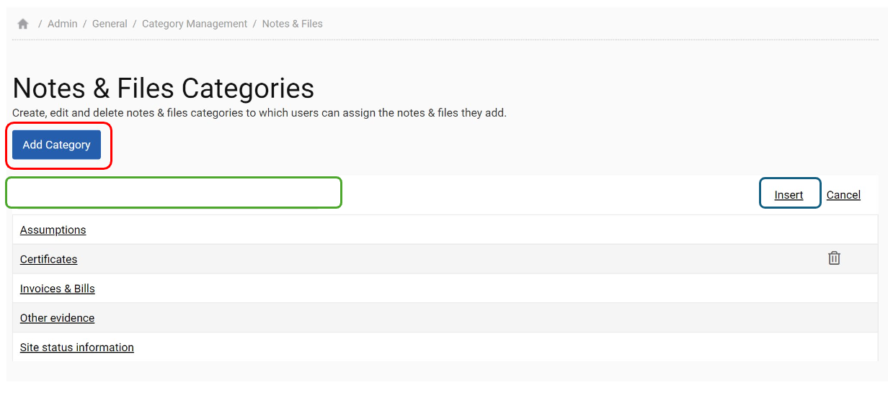

It is possible to create custom categories for Actions, Risk Register, Document Store, Notes and Files, Comparisons, Variance, Estimation and Node Label. The creation of categories for all of these sections is done in ‘Admin Settings > Category Management’.
To create a category click on ‘Add Category’ (red outline), then type the name of your category in the box provided (green outline) and then click on ‘Insert’ (blue outline). Please note that once a category has been assigned to an action, risk, document, note or file it is no longer possible to delete that category.
